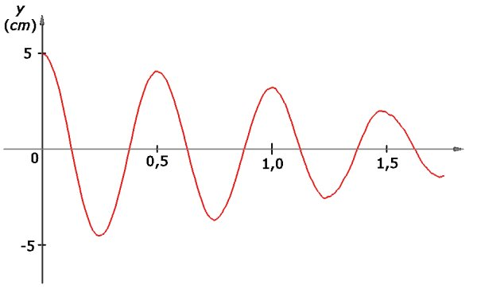
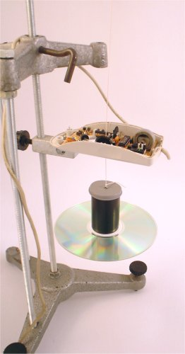
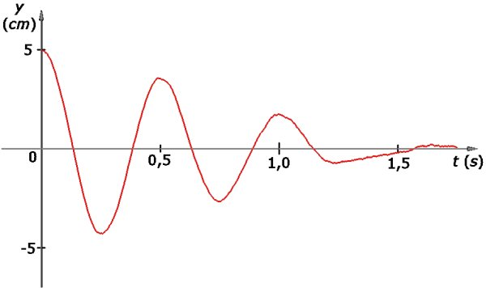
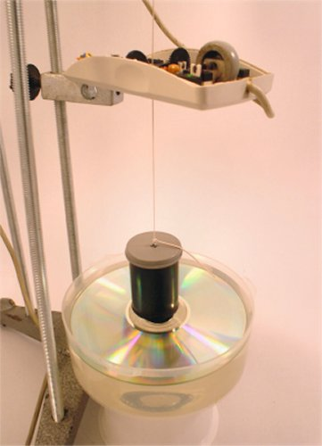
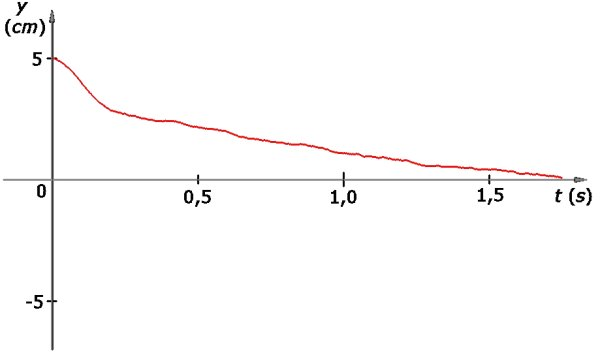
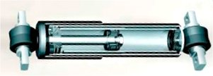
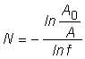
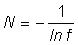

Numim oscilaţie amortizată oscilaţia a cărei amplitudine scade în timp.
Numim oscilaţie amortizată oscilaţia a cărei amplitudine scade în timp.
A.3. |
Amortizarea oscilaţiilor |
În cazul pendulului cu fir elastic pe care l−ai realizat, amplitudinea oscilaţiilor acestuia scade semnificativ de la o oscilaţie la alta. Graficul din figura 1A3−1 prezintă primele oscilaţii ale unui pendul cu fir elastic.
 Fig. 1A3−1. Primele oscilaţii ale unui pendul cu fir elastic.
Şi tu poţi colecta astfel de date, folosind un mouse şi un program pentru calculator. Accesează acest ghid!
Din analiza graficului din figura 1A3−1 reiese clar scăderea treptată a amplitudinii oscilaţiilor. Acestea nu sunt riguros periodice: după o oscilaţie, pendulul nu revine în poziţia de la începutul oscilaţiei.
Numim oscilaţie amortizată oscilaţia a cărei amplitudine scade în timp.
Amortizarea oscilaţiilor se datorează transferului inevitabil de energie mediului în care oscilatorul se mişcă. Pe parcursul modificării lungimii firului elastic apar frecări interne care modifică temperatura firului. O parte din energia oscilatorului este transferată mediului sub formă de căldură.
Totodată, corpul pendulului întâlneşte în drumul său moleculele aerului, transferându−le acestora o altă parte a energiei de oscilaţie.
În consecinţă, oscilaţiile devin din ce în ce mai puţin ample şi, în cele din urmă, pendulul se opreşte. Energia pe care o avea la începutul mişcării a fost transferată integral mediului.
Pendulului elastic din figura 1A3−2 i s−a ataşat un CD pentru a mări suprafaţa de contact cu aerul în timpul oscilaţiilor.
|  | Fig. 1A3−2. Pendul cu fir elastic, căruia i s−a ataşat un CD. |
Mişcându−se în sus şi în jos, pendulul cu CD întâlneşte mult mai multe molecule de aer şi transferă mai rapid energie mediului. Oscilaţiile acestuia sunt mai puternic amortizate (figura 1A3−3).
 Fig. 1A3−3. Reprezentarea grafică a oscilaţiilor pendulului cu CD ataşat.
Uneori suntem interesaţi în "stingerea" cât mai rapidă a oscilaţiilor (ca în cazul amortizorului unui automobil).
 Provocarea 1A3−1
Provocarea 1A3−1
Cum ai proceda pentru a amortiza cât mai mult mişcarea pendulului cu fir elastic (mişcarea acestuia să înceteze chiar înainte de a trece dincolo de poziţia de echilibru)?
Ai putea mări şi mai mult suprafaţa de contact cu aerul, ataşând, de exemplu, un disc de pick−up. Sau ai putea păstra CD−ul, dar ai putea pune pendulul să se mişte într−un mediu mult mai dens, cum este apa (figura 1A3−4).
|  | Fig. 1A3−4. Pendul cu fir elastic şi CD, pus să oscileze în apă. |
Pendulul va întâlni de sute de ori mai multe molecule decât în cazul în care s−ar mişca în aer. Astfel, mişcarea pendulului este mult mai puternic amortizată (figura 1A3−5).
 Fig. 1A3−5. Reprezentarea grafică a mişcării pendulului în apă.
Mişcarea pendulului în apă este atât de puternic amortizată, încât acesta nu mai trece dincolo de poziţia de echilibru - de fapt, nu mai oscilează!
Numim oscilaţie hiperamortizată mişcarea care încetează înainte de trecerea dincolo de poziţia de echilibru.
Acesta este principiul de funcţionare al unui amortizor pentru automobile (figura 1A3−6).
 Fig. 1A3−6. Amortizor pentru automobil.
Un piston (asemenea CD−ului) este pus să se mişte într−un cilindru cu ulei (uleiul este mai stabil decât apa şi nu corodează metalul). Când este reglat corect, mişcarea tijei acestuia este hiperamortizată. Dacă te aşezi pe capota automobilului şi te ridici brusc, capota trebuie să revină lent spre poziţia de echilibru, fără a oscila.
Alteori, suntem interesaţi în perpetuarea oscilaţiilor pe durate cât mai mari (ca în cazul ceasurilor).
Un criteriu cantitativ care caracterizează amortizarea oscilaţiilor este numărul de oscilaţii efectuate până când amplitudinea acestora scade de e ori (e fiind baza logaritmului natural, aproximativ 2,718). Oscilaţia este mai slab amortizată dacă acest număr este mai mare.
Motivul pentru care s−a ales e (şi nu un număr "rotund", cum este 10) este datorat faptului că scăderea tipică a amplitudinii se face astfel încât, după o oscilaţie, amplitudinea este o fracţiune f din amplitudinea oscilaţiei precedente.
Astfel, dacă amplitudinea iniţială este A0, amplitudinea după prima oscilaţie este:
A1 = f · A0 < A0 (f fiind subunitar),
după a doua oscilaţie:
A2 = f · A1 = f 2 · A0,
şi aşa mai departe.
După N oscilaţii, amplitudinea este:
AN = f N · A0.
Aşadar, numărul de oscilaţii N poate fi exprimat cel mai comod folosind logaritmul natural:

Dacă alegem drept criteriu o scădere a amplitudinii de e ori, expresia precedentă capătă cea mai simplă formă:

Provocarea 1A3−2
Amplitudinea unui oscilator scade astfel încât, la sfârşitul fiecărei oscilaţii, este 90% din cea de la îceputul oscilaţiei.
Câte oscilaţii efectuează acest oscilator până când amplitudinea sa scade de e ori?
 Activitatea experimentală 1A3−1
Activitatea experimentală 1A3−1
Măsoară câte oscilaţii efectuează pendulul cu fir de aţă pe care l−ai realizat la activitatea experimentală 1A1−1, până când amplitudinea sa unghiulară (unghiul maxim cu verticala) scade de e ori.